GPT 輔助內容本頁的程式架構、特徵工程設計、圖表程式與報告文字初稿由 AI 助理協助產生（本作業使用 Claude），作者負責檢閱、執行與修正。對話紀錄 PDF 見
docs/chat_log.pdf。01Business Understanding 商業理解
伊斯坦堡房價在高通膨下劇烈波動，買方、賣方與仲介需要一個透明、可解釋的估價工具。本作業的目標是以面積、房間數、樓層、屋齡、行政區、暖氣、產權等屬性預測公寓售價，並以預測區間表達單一物件價格的不確定性。
- 成功標準：測試集 R²（log 尺度）≥ 0.75；95% 預測區間的實際覆蓋率接近 95%；係數可解讀。
- 為何用線性回歸：係數即各屬性的邊際價值；對價格取 log 後，係數代表百分比變化，符合房價右偏的特性。
02Data Understanding 資料理解
資料共 30 欄，包含數值（面積、房間、樓層、屋齡、衛浴數、管理費）與類別（38 個行政區、583 個街區、暖氣、燃料、產權、家具、使用狀態、方位等）。主要發現：
price極度右偏（中位數約 675 萬 TRY，最大值 115 億，顯然是輸入錯誤）→ 取log(price)後接近常態。price_per_sqm等於 price ÷ 面積，屬於資料洩漏，必須刪除。- 6 個欄位缺值超過 50%；
rooms=114、total_floors=450、building_age=400 等為不合理值。 - 行政區之間的房價中位數差距可達 5 倍以上，地段是最重要的變數。
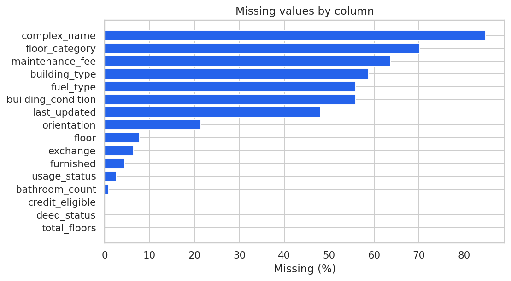
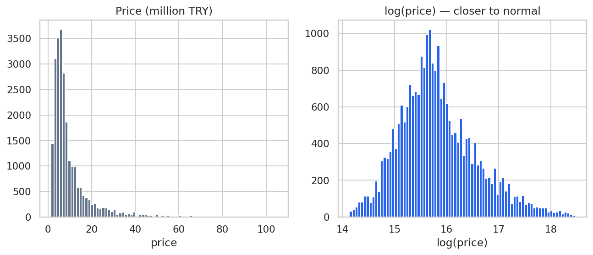
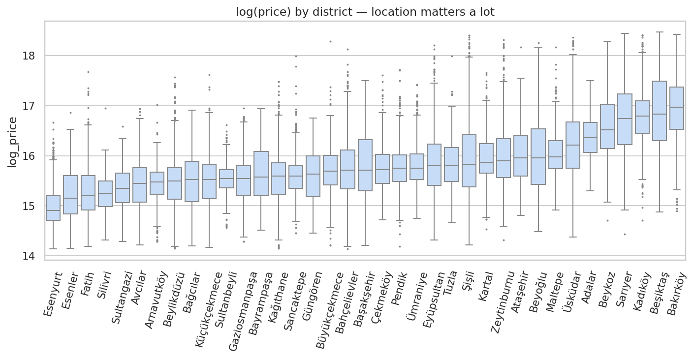
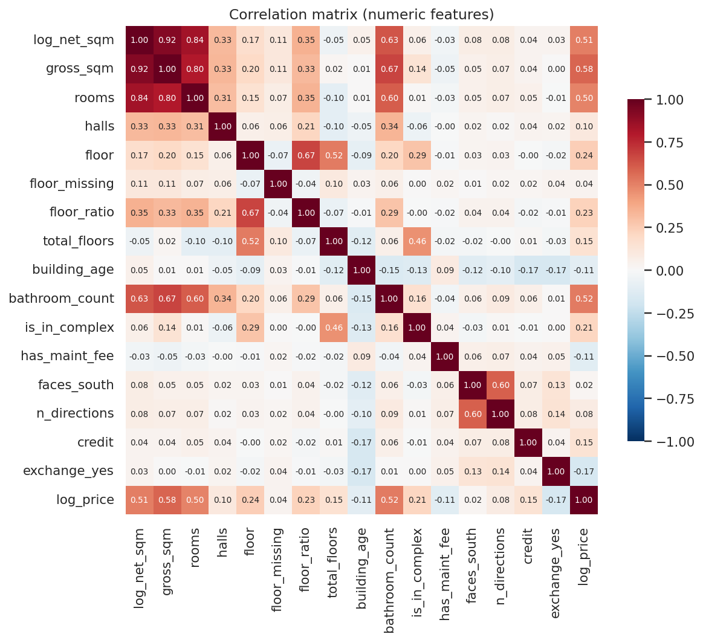
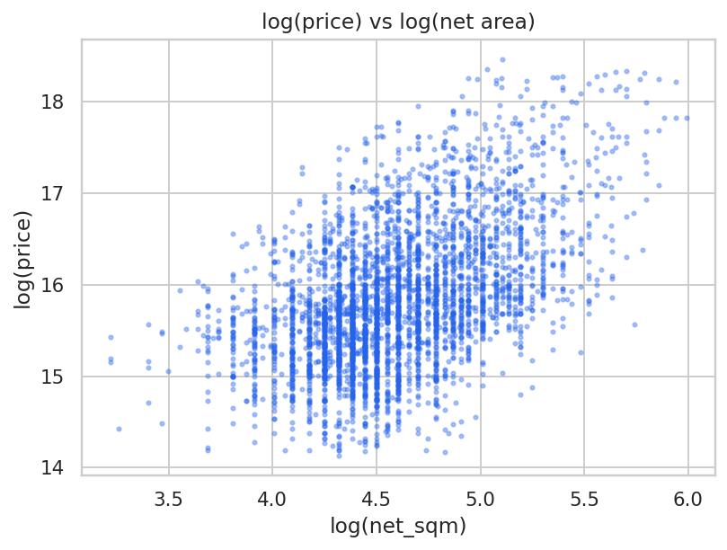
03Data Preparation 資料準備
| 步驟 | 做法 | 理由 |
|---|---|---|
| 刪除欄位 | price_per_sqm、listing_id、時間戳記、complex_name（缺 85%）、neighborhood（583 類） | 洩漏、ID、高基數 |
| 價格離群值 | 只保留 0.5%–99.5% 分位數 | 去除輸入錯誤 |
| 合理範圍 | 25 ≤ net_sqm ≤ 500、net ≤ gross、rooms ≤ 10、樓層 ≤ 總樓層 等 | 排除物理上不合理的資料 |
| 缺值 | 數值以中位數填補並加缺值旗標；類別補上 Missing | 保留樣本與「缺值本身」的資訊 |
| 衍生特徵 | log_net_sqm、floor_ratio、faces_south、n_directions、has_maint_fee | 捕捉非線性與方位價值 |
| 編碼與切分 | One-hot（drop_first），稀有類別併為 Other；訓練/測試 80/20 | 線性模型需要數值輸入 |
清理後剩 24,403 筆（只刪除 1.5%），共 22 個特徵群組，展開為 70 個欄位。
04Modeling 建模與特徵選擇
依序建立：① 簡單線性回歸 log(price) ~ log(net_sqm) 作為基準；② 全特徵多元線性回歸；③ 以三種方法進行特徵選擇：
- Forward Stepwise（AIC）：以特徵群組為單位（一個類別變數的所有 dummy 視為一組），每一步加入能讓 AIC 下降最多的群組，直到 ΔAIC < 2 為止。
- RFE：以標準化後的線性回歸，反覆刪除係數最小的欄位，最後保留 30 個。
- LassoCV：用 L1 正則化搭配 5-fold CV 選擇 α，係數被壓成 0 的欄位視為不重要。
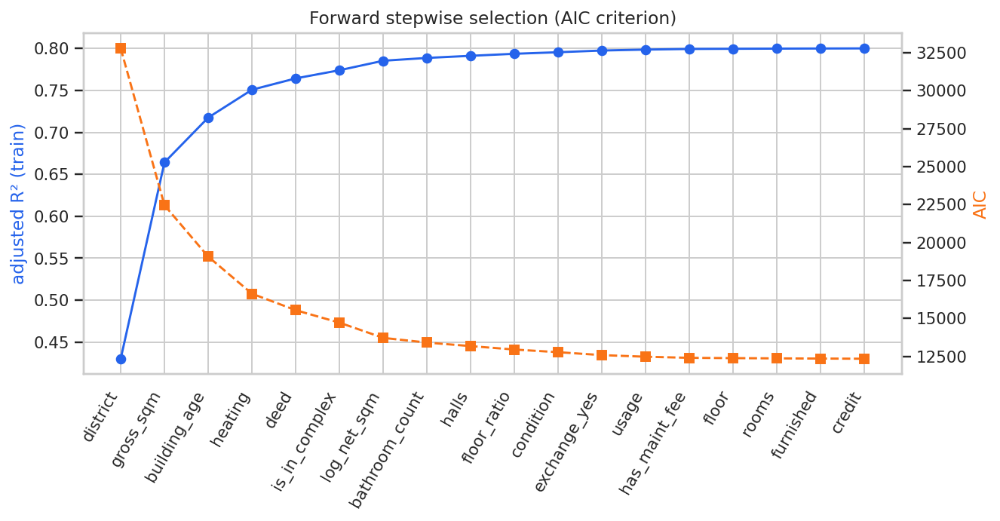
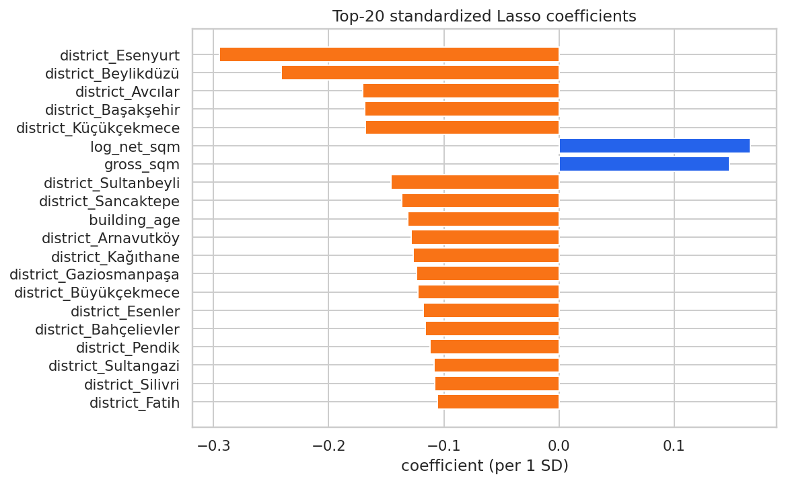
05Evaluation 評估
模型比較（測試集，n = ）
R²／RMSE／MAE 皆在 log 尺度計算；MAPE、MedAPE 是轉回里拉後的百分比誤差；CV5 為 5-fold 交叉驗證的 R²。
預測圖（含 95% 信賴區間與預測區間）
信賴區間 (CI) 描述「平均價格」的不確定性，只來自係數的估計誤差；預測區間 (PI) 描述「單一物件價格」的不確定性，還多加了個別物件的誤差 σ²，所以寬得多。測試集上 95% PI 的實際覆蓋率為 ，非常接近理論值 95%。
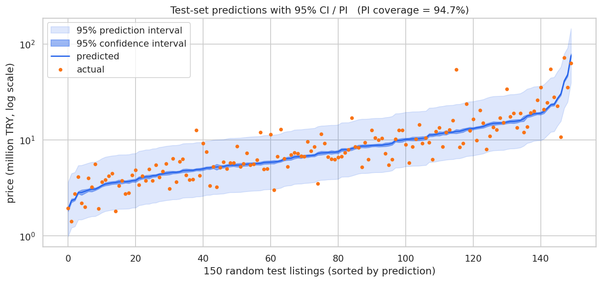
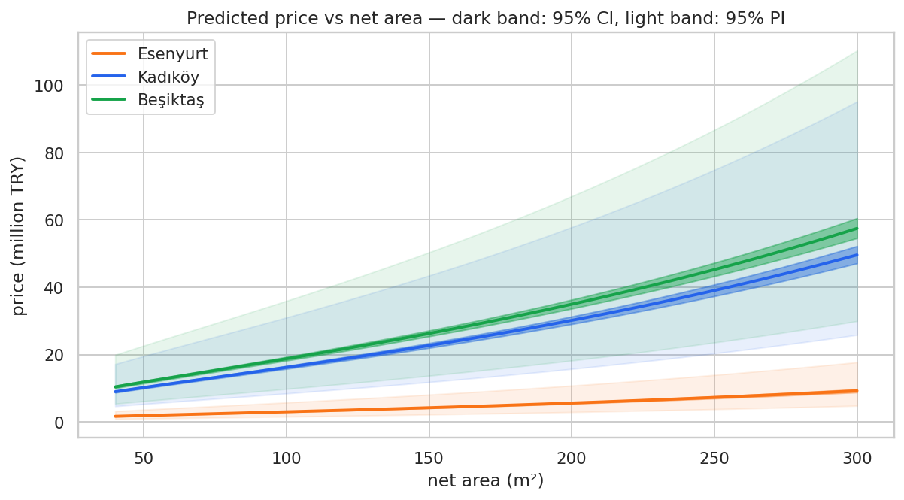
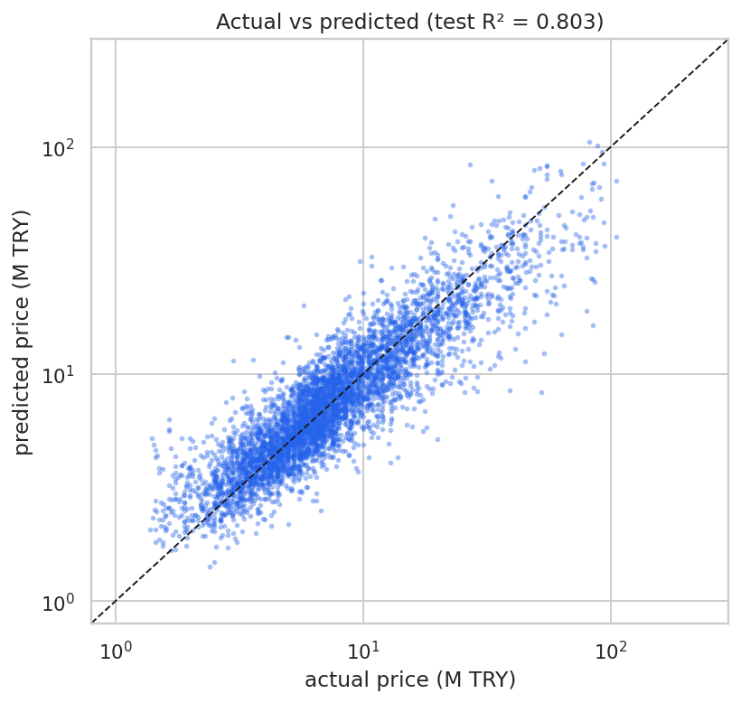
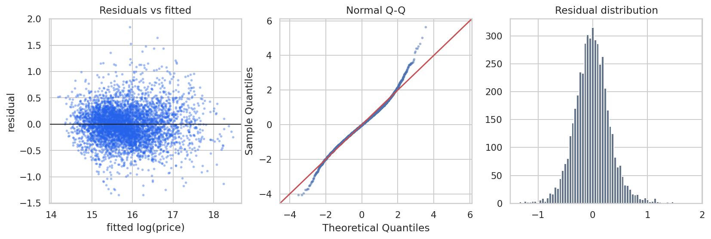
結論與限制
- 多元線性回歸將 R² 從 0.26（只用面積）提升到約 0.80，主要貢獻來自行政區、面積、屋齡、暖氣與產權。
- Stepwise 刪除 4 個沒有貢獻的群組後，表現與全模型相同但更精簡；Lasso 的結果也幾乎一樣，表示選擇結果穩定。RFE 以單一欄位為單位刪除，會把行政區 dummy 拆開，所以表現較差。
- VIF 都小於 10，共線性在可接受範圍；殘差大致對稱，但兩端尾部略厚，代表仍有少數極端物件無法解釋。
- 限制：沒有使用街區等更細的地段資訊，也沒有加入交互作用項（例如面積 × 行政區）；用 exp(ŷ) 轉回里拉得到的是「中位數」預測，而不是平均數。
06Deployment 部署：線上估價器
最終模型（Stepwise-AIC）的係數與共變異數矩陣已匯出為 model.js，估價在瀏覽器端完成，不需要伺服器：ŷ = xᵀβ，95% PI = ŷ ± t·√(σ² + xᵀ Cov(β) x)，再取 e(·) 轉回里拉。
預測價格（中位數）–
95% 信賴區間（平均價格）–
95% 預測區間（單一物件）–
每平方公尺單價–
淺色＝PI，深色＝CI，橘線＝點預測